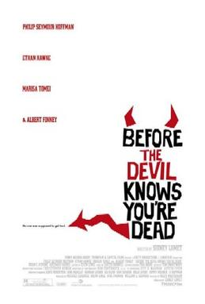

Sidney Lumet
2007
117 minutes
This film has a long title that evokes one of those things that people say to sound Irish. "May you be in heaven half an hour before the devil knows you're dead." It is a cool saying if it's not too heavily Irish-glossed.
This has Philip Seymour Hoffman and Etan Hawke in it, whose characters are so spineless and repulsive that it turns this into quite an enjoyable watch. Add in Marisa Tomei and Albert Finney and you know you're in for an actor's clinic. Some films have characters that are so pathetic and unlikeable that you stop caring or just get depressed and discouraged. These characters are so repulsively flawed that they seem divinely inspired. They remind you so much of people you have known and had in your life that you can't look away as their pathetic self-inflicted drama spins to a sad conclusion. They are the kind of hapless fuckheads that are so self-centered and oblivious and self-hating that they are unable to empathize at all with anyone they hurt. It is the most realistic depiction of fuckhead ever set to film. These idiots may as well have been ripped from your own past and had their flesh and blood mashed into the celluloid. You don't want to watch this more than once, but you're glad you did just to know that someone else has probably had to deal with the same kinds of spineless soulless jerks who have plagued you in your life.
Time to choose something different: